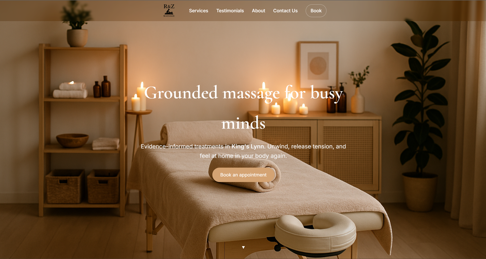

UI/UXWeb Design and DevelopmentBackend Development
My personal website was built completely from scratch using HTML, CSS,
and JavaScript – no templates or frameworks. It serves as an evolving
digital portfolio showcasing my academic journey, technical projects,
and creative work from GCSEs to university.
Designed a clean, modern UI/UX to reflect my identity as a developer
and designer
Implemented category-based filtering system with interactive project
views
Developed a responsive layout for accessibility across all devices
Continuously updated to reflect latest projects, achievements, and
experience
This site is not just a portfolio – it’s a creative canvas that combines
form, function, and storytelling to represent my growth as a digital
designer and developer.
R&Z Massage – Business Website 🌿

UI/UXWeb DevelopmentIntegration
I designed and developed a website for a local massage therapist
business in King’s Lynn. The goal was to create a
calm, modern, and functional online presence where
clients can learn about services and easily book appointments.
✨ The site reflects the therapist’s gentle, client-focused approach
while improving accessibility and professionalism.
🚀 Features
Clean, minimal UI aligned with the client’s brand
Responsive layout that adapts across all devices
Integrated online booking system via Fresha
Deployed on Netlify for speed and reliability
SEO-friendly structure with Open Graph tags for social sharing
💡 What I Learned
Client collaboration using an agile, feedback-driven process
Working with booking integrations like Fresha
Deploying production-ready websites with Netlify
Importance of design choices in shaping brand perception
This was the very first Python program I ever built — a fun and visual
turtle race simulation using Python's built-in
turtle graphics and random libraries.
🎮 Multiple turtles race across the screen, each moving forward
randomly. The first turtle to cross the finish line wins!
🚀 How It Works
Turtles are drawn on a GUI window using turtle
Each turtle moves forward by a random number of pixels per iteration
The race continues until one turtle reaches the finish line
During the 2023 summer holidays, the transition period from Sixth Form
to University, I decided to learn the programming language Java. I
applied my newly acquired knowledge by building a Spring Boot
application.
Spring Boot (part of the broader Spring Framework) is used to create
production-ready web applications quickly. It's commonly adopted by
large enterprises such as Netflix due to its ability to minimize
boilerplate code, making web development faster and more maintainable.
With Java & Spring Boot, I was able to:
Allow users (customers) to register an account
Enable user login functionality
Implement password reset via email using a unique token in the URL
Store user data securely in a MySQL database
Hash passwords using BCrypt before storing them
Incorporate both JUnit and integration testing
Implement application-level logging
If I were to improve the application further, I would:
Implement session IDs and store them in a NoSQL in-memory DB like
Redis
Enable users to update their profile details
Add functionality to logout and delete their account
Allow users to upload a profile image
I had so much fun learning these technologies — particularly JUnit and
integration testing. Although I initially struggled with testing, I
eventually overcame those challenges, and it became one of the most
rewarding aspects of the entire experience.
During my spare time as a 1st year student at The University of
Leicester, I self-taught JavaScript, followed by Node.js and Express.js.
Once I had a good grasp of these technologies, I developed a full
backend web application built around the theme of Cuban cigars.
With Node.js & Express.js, I implemented the following features:
Allow users (customers) to register an account
Login system with persistent sessions using
passport module
Store user data in a MySQL database
Hash passwords using bcryptjs before storing
Incorporated JUnit-style testing using supertest
Logging implemented using winston
Account deletion functionality
Password change functionality
Secure logout functionality
The frontend of this web application was built in collaboration with
@AaronShinu